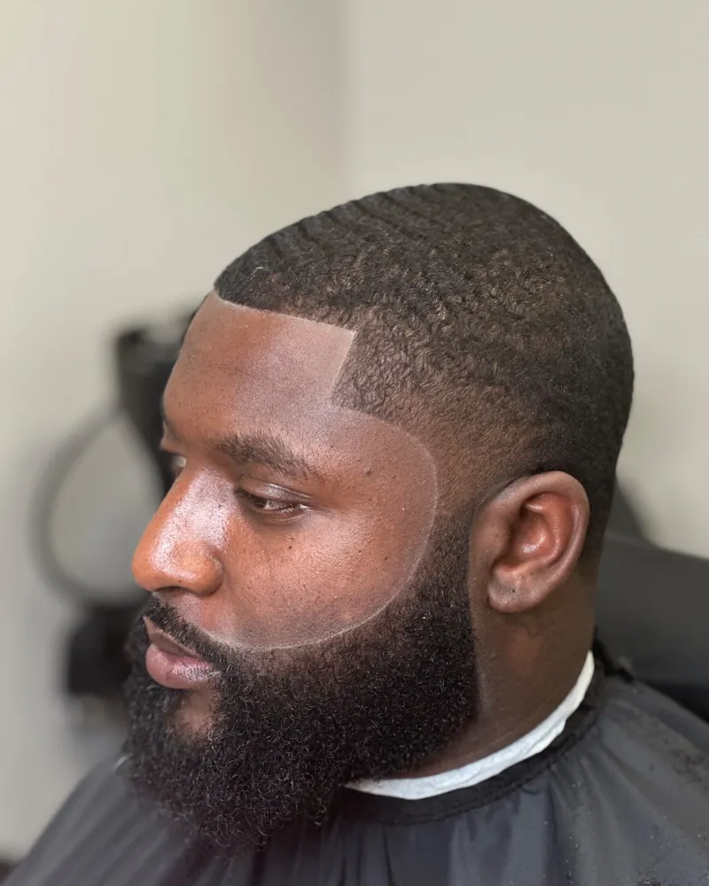
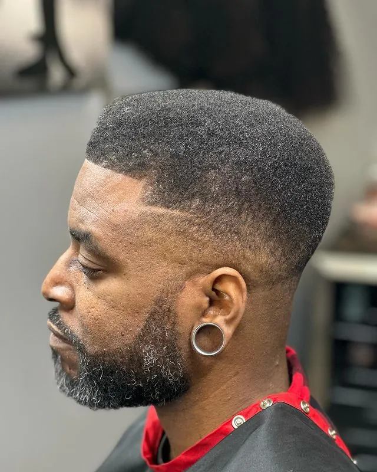
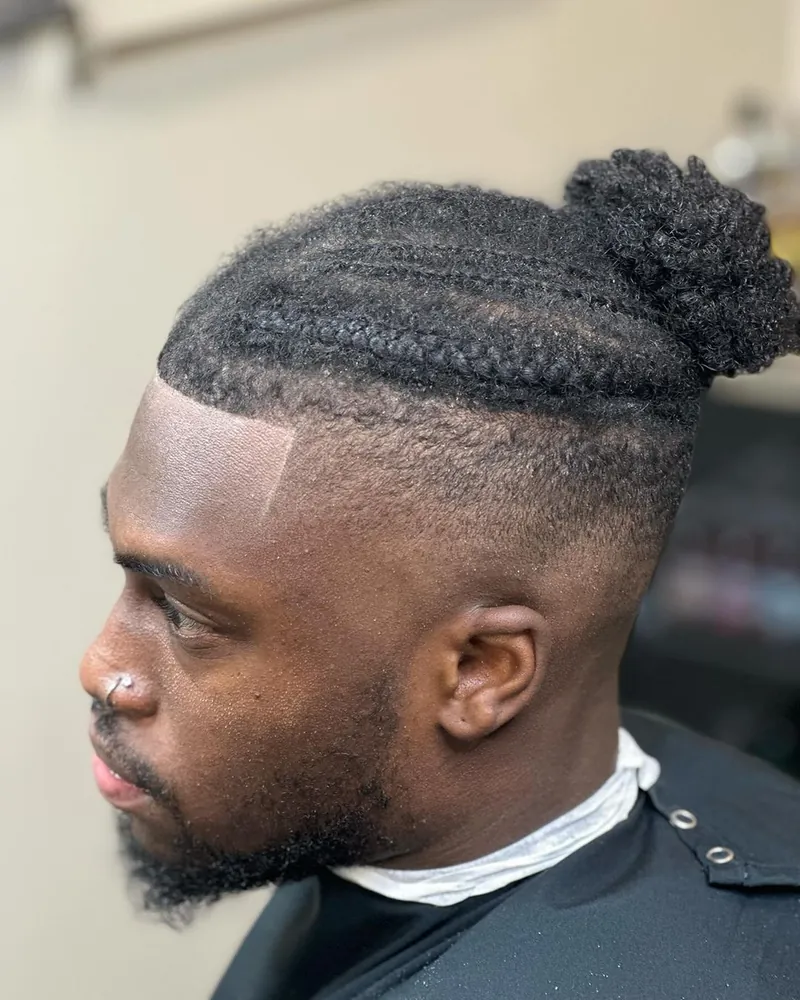
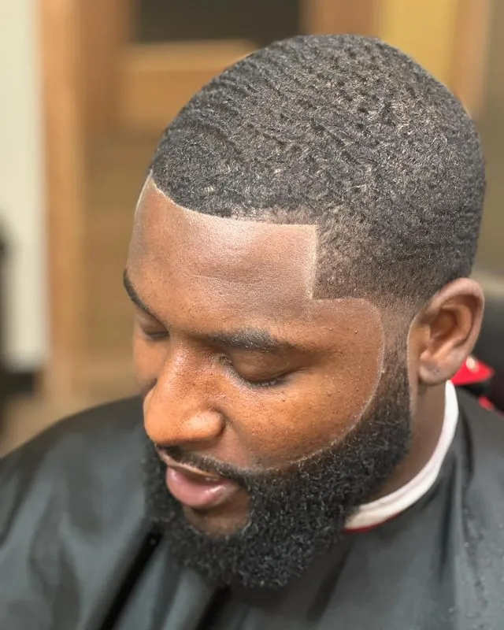
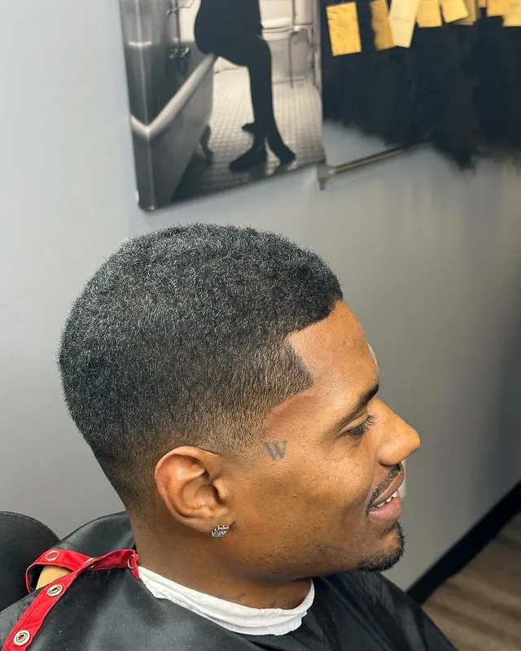
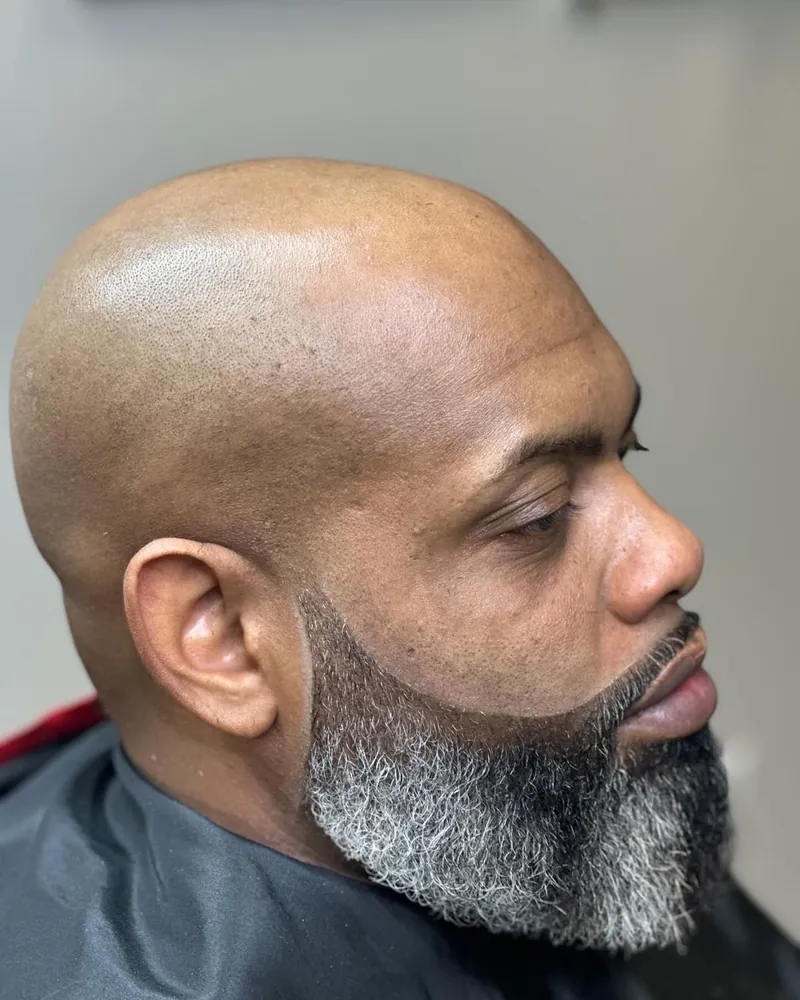
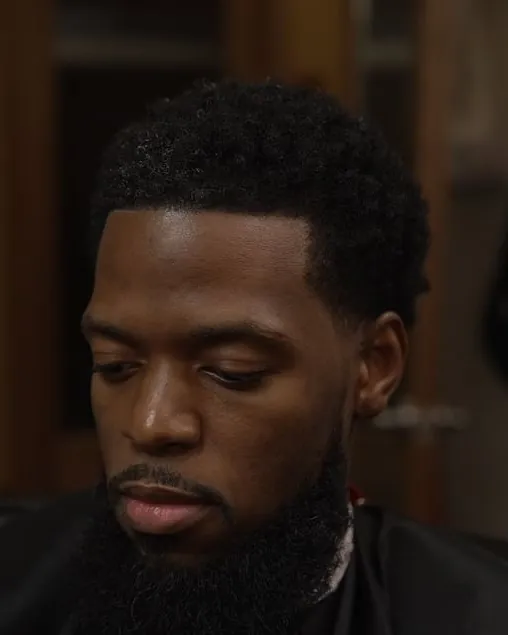
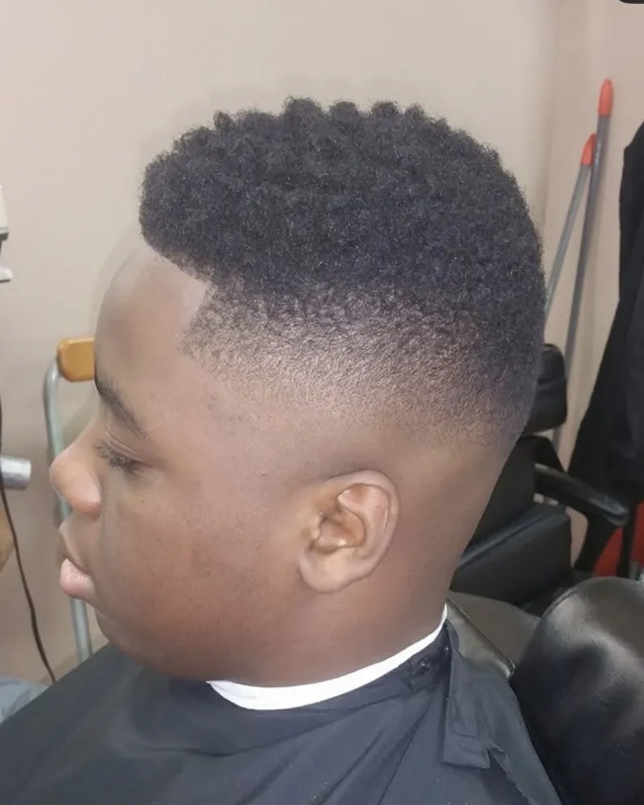
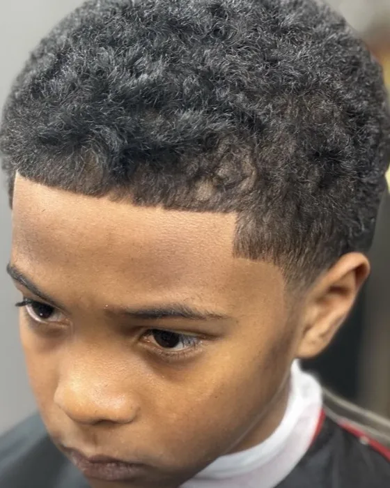
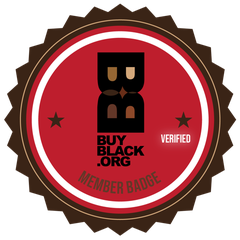

Black-Owned Barbershop in Owings Mills, MD
Master barber Clifton "Al-Hakeem" Bey · One chair, by appointment
Al-Hakeem's Tonsorial is a Black-owned barbershop in Owings Mills, Maryland, owned and run by master barber Clifton "Al-Hakeem" Bey. He has been cutting hair since 1996 and has held his Maryland master barber license since 1999.
The shop is a private suite with one chair. You book a time, and that time is yours.
Book an AppointmentA Barber Who Knows Your Hair
Most new clients want to know one thing first: does this barber know my hair?
Clifton has spent three decades cutting curly and tightly coiled hair, where a fade, a taper or a lineup has to follow the way the hair grows. He reads your texture, growth pattern and hairline before the clippers come out.
If you are still deciding on a cut, start with the difference between a low, mid or high fade, or read how a master barber reads hair texture.
See the Work
Every photo below is Clifton's own work on his clients.
Fades and Tapers
-

Low fade, sharp lineup, full beard -

Skin fade with a sculpted gray beard -

High fade under braids
Lineups
-

Waves with a squared lineup -

Short taper with a crisp lineup
Beards
-

Clean head, sculpted gray beard -

Full beard, shaped and lined
Young Clients
-

High-top fade -

Curly top with a taper
One Chair, One Client
There is no row of chairs and no audience. For the length of your appointment, the suite is yours. Talk, or sit quietly, whichever you want that day.
After a year and a half back in a traditional shop, Clifton chose the private suite on purpose. Read why, in his own words.
Your First Visit
New clients book the New Client / Reset Cut. It includes a full consultation: Clifton looks at your hair texture, your face shape and what you want from the cut before he starts.
| Service | Price |
|---|---|
| New Client / Reset Cut | $75 |
| Signature Cut (men and women) | $60 |
| Signature Cut + Beard Ritual | $115 |
| Youth Signature Cut (ages 9 to 16) | $45 |
| Shape Up (Line Up) | $25 |
Young Clients, Ages 9 to 16
The Youth Signature Cut is for ages 9 to 16. Clifton takes his time with young clients, and the quiet suite helps them feel at ease. There is also a Father & Son membership at $180 a month, built around the father-son haircut tradition.
Black-Owned, in Owings Mills
There is value in having a place where people recognize you when you walk through the door. And there is value in traditions that have been passed from one generation to another.
I want the professionalism of a premium grooming environment without losing the humanity of the neighborhood barbershop.
Owings Mills is home to 35,674 people, and about six in ten are Black or African American (2020 Census). Maryland has one of the highest shares of Black-owned businesses in the country, at about 10% of the state's firms (Pew Research Center (opens in a new tab), 2022 data).

(opens in a new tab)Al-Hakeem's Tonsorial is a verified member of BuyBlack.org and is listed on Support Black Owned (opens in a new tab). Everyone is welcome in the chair.
Finding the Suite
Al-Hakeem's Tonsorial is Suite 21 inside Salontra Select Suites, in the 10200 Grand Central Avenue building at Metro Centre at Owings Mills.
10200 Grand Central Avenue, Suite 21Owings Mills, MD 21117
- Parking: Metro Centre's two garages are free: Garage 1 at 5048 Painters Mill Road and Garage 2 at 10450 Grand Central Avenue.
- By Metro: The Owings Mills station, the last stop on the Metro SubwayLink, connects to Metro Centre through a pedestrian tunnel under I-795.
- Hours: Tuesday to Friday 10 AM to 6 PM, Saturday 10 AM to 4 PM, Sunday 10 AM to 3 PM, closed Monday.
Questions
Is Al-Hakeem's Tonsorial Black-owned?
Yes. It is owned and operated by master barber Clifton "Al-Hakeem" Bey.
What hair types do you cut?
Every texture. Clifton has three decades of experience with curly and tightly coiled hair.
Do you cut women's hair?
Yes. The Signature Cut is offered for men and women.
Do you cut children's hair?
Yes, from age 9. The Youth Signature Cut is for ages 9 to 16.
Do I need an appointment?
Appointments are strongly recommended and can be booked online at any time. Walk-ins are accommodated when availability allows.
Book Your Chair
Questions first? Call (347) 815-5706.
Book an Appointment